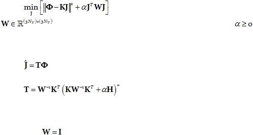

|

Cite as: “R.D. Pascual-Marqui: Discrete, 3D distributed, linear imaging methods of electric neuronal activity. Part 1: exact, zero
error localization. arXiv:0710.3341 [math-ph], 2007-October-17, http://arxiv.org/pdf/0710.3341 ”
Page 8 of 16
7.
An alternative theoretical approach to eLORETA, including
numerical methods
7.1.
The classical weighted minimum norm tomography
Consider the regularized, weighted minimum norm problem:
Eq. 35:
where
denotes a given symmetric weight matrix, and
denotes the
regularization parameter.
The solution is linear:
Eq. 36:
with:
Eq. 37:
where the superscript “+” denotes the Moore-Penrose pseudoinverse (which is equal to the
common inverse if the matrix is non-singular).
The choice
gives the classical minimum norm solution. This was the first 2D
distributed linear solution introduced in MEG by Hämäläinen and Ilmoniemi (1984). Some
of the images in that publication show that when the solution space is parallel to the
measurement space, point-test sources are correctly localized, albeit with low resolution.
However, when the solution space is extended to 3D, the minimum norm solution is
utterly
incapable of correct localization of depth.
This was clarified in Pascual-Marqui
(1999), where it was shown that the minimum norm solution is harmonic, and harmonic
functions attain their extreme values on the boundary of their domain of definition.
This
means that deep sources are always incorrectly localized to the outermost cortex.
Another popular choice
is depth weighting for the 3D solution space, i.e. larger
weights are assigned to deeper sources, with the hope of correcting depth localization error.
These solutions achieve lower localization error than the classical minimum norm, but their
errors are still significant, no matter what inverse power for depth weighting is used.
The
weighted minimum norm method that uses combined depth weighting and
Laplacian smoothing, known as LORETA (low resolution brain electromagnetic
tomography; Pascual-Marqui et al 1994),
achieved the lowest localization error up to the
present, among linear solutions. Yet, the method has non-zero error, but quite lower than
the two previous methods.